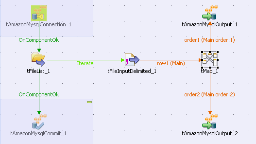
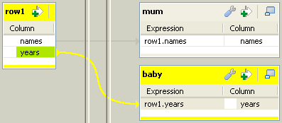
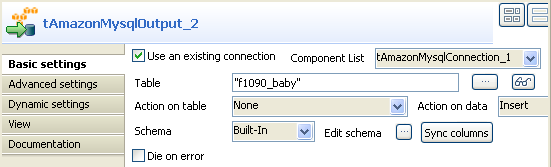
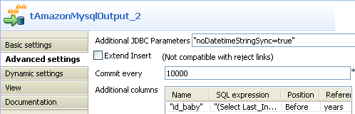
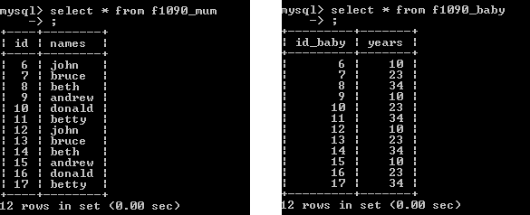

This component is closely related to tAmazonMysqlCommit and tAmazonMysqlRollback. It usually doesn’t make much sense to use one of these without using a tAmazonMysqlConnection component to open a connection for the current transaction.
|
Component family |
Cloud/AmazonRDS/MySQL | |
|
Function |
Opens a connection to the database for a current transaction. | |
|
Purpose |
This component allows you to commit all of the Job data to an output database in just a single transaction, once the data has been validated. | |
|
Basic settings |
Property type |
Either Built-in or Repository. |
|
|
|
Built-in: No property data stored centrally. |
|
|
|
Repository: Select the repository file in which the properties are stored. The fields that follow are completed automatically using the data retrieved. |
|
|
DB Version |
MySQL 5 is available. |
|
|
Host |
Database server IP address. |
|
|
Port |
Listening port number of DB server. |
|
|
Database |
Name of the database. |
|
|
Additional JDBC parameters |
Specify additional connection properties for the DB connection you are creating. |
|
|
Username and Password |
DB user authentication data. |
|
|
Use or register a shared DB Connection |
Select this check box to share your connection or fetch a connection shared by a parent or child Job. This allows you to share one single DB connection among several DB connection components from different Job levels that can be either parent or child. Shared DB Connection Name: set or type in the shared connection name. |
|
Advanced settings |
Auto Commit |
Select this check box to automatically commit a transaction when it is completed. |
|
|
tStatCatcher Statistics |
Select this check box to collect log data at the component level. |
|
Usage |
This component is to be used along with AmazonMysql components, especially with tAmazonMysqlCommit and tAmazonMysqlRollback components. | |
|
Limitation |
n/a | |
The following Job is dedicated to advanced database users, who want to carry out multiple table insertions using a parent table id to feed a child table. As a prerequisite to this Job, follow the steps described below to create the relevant tables using an engine such as innodb.
In a command line editor, connect to your Mysql server. Once connected to the relevant database, type in the following command to create the parent table: create table f1090_mum(id int not null auto_increment, name varchar(10), primary key(id)) engine=innodb.
Then create the second table: create table baby (id_baby int not null, years int) engine=innodb.
Back into Talend Open Studio, the Job requires seven components including tAmazonMysqlConnection and tAmazonMysqlCommit.
Drag and drop the following components from the Palette: tFileList, tFileInputDelimited, tMap, tAmazonMysqlOutput (x2).
Connect the tFileList component to the input file component using an Iterate link as the name of the file to be processed will be dynamically filled in from the tFileList directory using a global variable.
Connect the tFileInputDelimited component to the tMap and dispatch the flow between the two output AmazonMysql DB components. Use a Row link for each for these connections representing the main data flow.
Set the tFileList component properties, such as the directory. name where files will be fetched from.
Add a tAmazonMysqlConnection component and connect it to the starter component of this job, in this example, the tFileList component using an OnComponentOk link to define the execution order.
In the tAmazonMysqlConnection Component view, set the connection details manually or fetch them from the Repository if you centrally stored them as a Metadata DB connection entry. For more information about Metadata, see Talend Open Studio User Guide.
On the tFileInputDelimited component’s Basic settings panel, press Ctrl+Space bar to access the variable list. Set the File Name field to the global variable: tFileList_1.CURRENT_FILEPATH

Set the rest of the fields as usual, defining the row and field separators according to your file structure. Then set the schema manually through the Edit schema feature or select the schema from the Repository. In Java version, make sure the data type is correctly set, in accordance with the nature of the data processed.
In the tMap Output area, add two output tables, one called mum for the parent table, the second called baby, for the child table.
Drag the Name column from the Input area, and drop it to the mum table. Drag the Years column from the Input area and drop it to the baby table.
Make sure the mum table is on the top of the baby table as the order is determining for the flow sequence hence the DB insert to perform correctly.
Then connect the output row link to distribute correctly the flow to the relevant DB output component.
In each of the tAmazonMysqlOutput components’ Basic settings panel, select the Use an existing connection check box to retrieve the tAmazonMysqlConnection details.
Set the Table name making sure it corresponds to the correct table, in this example either f1090_mum or f1090_baby.
There is no action on the table as they are already created.
Select Insert as Action on data for both output components. Click on Sync columns to retrieve the schema set in the tMap.
Go to the Advanced settings panel of each of the tAmazonMysqlOutput components. Notice that the Commit every field will get overridden by the tAmazonMysqlCommit.
In the Additional columns area of the DB output component corresponding to the child table (f1090_baby), set the id_baby column so that it reuses the id from the parent table. In the SQL expression field type in: '(Select Last_Insert_id())'.
The position is Before and the Reference column is years.
Add the tAmazonMysqlCommit component to the design workspace and connect it from the tFileList component using a OnComponentOk connection in order for the Job to terminate with the transaction commit.
On the tAmazonMysqlCommit Component view, select in the list the connection to be used. Save your Job and press F6 to execute it.
The parent table id has been reused to feed the id_baby column.